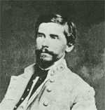

|

|

|
|
|
Patrick Ronayne Cleburne was born at Ovens, County Cork,
Ireland on March 16, 1826 to Dr. Joseph and Mary Anne
Ronayne Cleburne. Both parents died before Patrick was 15.
He attempted to become a physician, but was denied admission
to Trinity College in February 1846. Later that year he
joined the 41st Regiment of Foot of the British Army as a
private. After three years service, he bought his discharge
and moved with his older brother and two sisters to the
United States. Cleburne settled in Helena, Arkansas and
established himself as a druggist. In 1856 he began to
practice law and by 1860 had become senior partner in the
firm of Cleburne, Scaife, and Mangum.
At the beginning of the Civil War, he joined the Yell
Rifles, a local Rebel infantry company, as a private and was
soon elected captain of the company. Upon the organization
of the 1st Arkansas Infantry Regiment he was elected
colonel. In March, 1862 he was elevated to brigade command
under William J. Hardee serving in that capacity at Shiloh,
throughout the Kentucky campaign (where he was shot through
the mouth at the Battle of Richmond, Kentucky on August 30,
1862), and during the battle of Murfreesboro.
In early 1863, he was promoted to the rank of major
general and given command of an infantry division. He
directed the division during the Tullahoma Campaign and
Chickamauga. His defense of the north end of Missionary
Ridge on November 25, 1863 and his rearguard action at
Ringgold, Georgia on November 27th confirmed his reputation
as one of the Confederacy's best fighting generals.
Cleburne came to be called the "Stonewall Jackson of the
West," but his 1864 suggestion to offer freedom to slaves
who would join the Confederate Army, however, prevented his
elevation to higher command. He led his division with
distinction during the Atlanta Campaign of 1864 and died
leading his men against the Federal earthworks at Franklin,
Tennessee on November 30, 1864.
Source: Joan Waugh, ed., Facts on File Encyclopedia of American
History: Civil War and Reconstruction, 1856 to 1869 (New York: Facts on
File, 2003), 67-68.
|